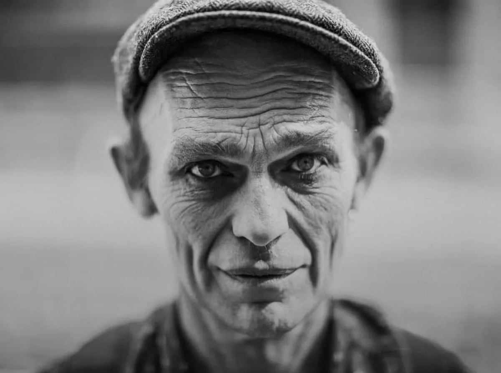

About Doug
Multidisciplinary artist and creative director working in immersive experience, large-scale spectacle and performance. Based in Bristol, working internationally.

Twenty-five years of making the unbuildable happen
Doug works at the point where an idea is still too big, too strange or too logistically frightening for anyone to have costed it yet. That is the useful moment — and it is where most projects lose their nerve.
Founded Invisible Circus in 2000, and has since directed at festival and attraction scale: narrative direction for Boomtown Fair, art direction at Wake the Tiger, and the creation of the Red Rebel Brigade — a piece of character design now performed by groups worldwide.
He generates ideas quickly and holds none of them too tightly, which is what makes him a good collaborator rather than a difficult one.